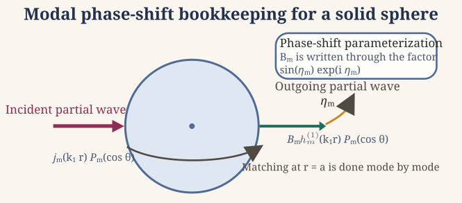
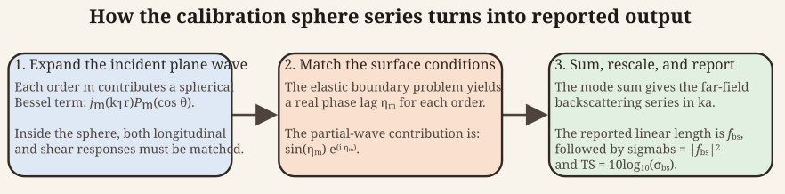

Target strength for a calibration sphere
Source:vignettes/calibration/calibration-theory.Rmd
calibration-theory.RmdIntroduction
Benchmarked Validated
Model-family pages: Overview Implementation Theory
Echosounders are commonly calibrated with standard targets whose acoustic response is strong, repeatable, and sufficiently well understood that the backscattering level can be predicted independently of the instrument being calibrated (Foote 1990). In fisheries and ocean-acoustics work, that standard target is often a tungsten carbide sphere, although aluminum, steel, brass, and copper spheres are also used in some settings (Hickling 1962; MacLennan 1981). The reason a solid sphere is so useful is not only that it is mechanically robust. It is also one of the few practically important targets for which the full elastic scattering problem remains separable in spherical coordinates.
For a calibration sphere, the surrounding medium supports an acoustic pressure field, while the sphere interior supports both compressional and shear motion. The scattering problem therefore differs fundamentally from a fluid-filled or rigid sphere problem. The exterior field must be matched to an elastic interior rather than to a single scalar potential. That coupling is what gives the calibration target its characteristic resonance structure and why the material properties of the sphere matter so strongly.
Governing fields
In the surrounding fluid, the acoustic pressure field, p(\mathbf{x}, \omega), satisfies the scalar Helmholtz equation:
\nabla^2p + k^2_{1}p = 0,
where \omega is the angular frequency, \mathbf{x} = (r, \theta, \varphi) is the position vector in spherical coordinates, c_1 is the fluid sound speed, and k_1 = \frac{\omega}{c_1} is the acoustic wavenumber. The gradient, \nabla, is the vector differential operator defined by:
\nabla = \left( \frac{\partial}{\partial x} , \frac{\partial}{\partial y} , \frac{\partial}{\partial z} \right).
Within the solid elastic sphere, the displacement field \mathbf{u}(\mathbf{x}, \omega) satisfies the Navier equation:
(\lambda + 2 \mu)\nabla(\nabla \cdot \mathbf{u}) - \mu \nabla \times (\nabla \times \mathbf{u}) + \rho_2 \omega^2 \mathbf{u} = 0,
where \lambda and \mu are the Lamé elastic constants and \rho_2 is the sphere density. The elastic field is then decomposed into compressional and shear potentials:
\mathbf{u} = \nabla \phi + \nabla \times \mathbf{\Psi},
After that decomposition, the interior problem separates into two Helmholtz equations:
\nabla^2 \phi + k_\ell^2 \phi = 0, \qquad \nabla^2 \mathbf{\Psi} + k_\tau^2 \mathbf{\Psi} = 0,
where k_\ell and k_\tau are the longitudinal and transverse wavenumbers, respectively. The key point is that the sphere supports two distinct elastic wave families internally, and both must satisfy the boundary conditions at the fluid-solid interface.
Separability of the Hemholtz equation in spherical coordinates
Because the geometry is spherical, the exterior and interior Helmholtz equations are separable in spherical coordinates (Achenbach 1973). For a sphere centered at the origin, the Hemholtz equation provides solutions that can be written as products of single-variable functions:
\psi(r, \theta, \varphi) = R(r) \Theta(\theta) \mathbf{\Phi}(\varphi).
This separation leads to angular eigenfunctions that are spherical harmonics, \mathcal{Y}^n_m(\theta, \varphi), and radial functions that are spherical Bessel or Hankel functions. Thus the separable solutions take the form:
\psi(r, \theta, \varphi) = \sum_{m=0}^\infty \sum_{n = -m}^m R_m(r) \mathcal{Y}_{m}^n(\theta, \varphi),
where the radial solutions (R_m(r)) correspond to j_m(kr) and h_m^{(1)}(kr) for the regular solutions and outgoing waves, respectively. In this notation, m represents the angular mode number and n is the azimuthal order.
For axisymmetric plane-wave incidence, the angular dependence reduces to Legendre polynomials, so each field can be written as a modal sum over angular order m:
\psi(r,\theta) = \sum_{m=0}^{\infty} R_m(r) P_m(\cos \theta),
where P_m is the Legendre polynomial of degree m. Consequently, the spatial dependence of each field can be decomposed into independent radial and angular parts.
Modal field expansion
Because the angular functions P_m(\cos \theta) are orthogonal, the boundary conditions at surface r = a decouple by angular order:
\int\limits_{-1}^1 P_n(\mu) P_m(\mu) d\mu = 0 ~ \text{for } n \neq m, \quad \mu = \cos \theta
where a is the sphere radius. The boundary conditions then enforce:
\begin{align*} \mathbf{u}_2(r) &= \mathbf{u}_1(r) ~ \text{(continuity of normal displacement)} , \\ \sigma_2(rr) &= -p_1 ~ \text{(continuity of normal stress)} , \\ \sigma_2(r\theta) &= 0 ~ \text{(zero tangential stress)} , \end{align*}
where \sigma denotes the Cauchy stress tensor describing internal forces in the solid, \sigma_2(rr) is its component along the radial direction in spherical coordinates (i.e., the normal stress on a spherical surface), and \sigma_2(r \theta) is the shear stress along the polar direction \theta of the sphere.
This model incorporates copmressional and shear waves within the calibration sphere alongside the boundary conditions at the sphere-medium interface to compute the far-field acoustic backscatter. Since the full elastodynamic scattering problem is separable for an elastic sphere immersed in a fluid, the natural eigenfunctions are spherical harmonics. These boundary conditions can then be projected onto the basis of Legendre polynomials due to the assumed orthogonality whereby each angular mode n interacts only with itself. Thus:
\int\limits_{-1}^1 P_m(\cos \theta)\underbrace{(\text{boundary condition})}_{\text{function of }\theta} d(\cos \theta),
where h_m^{(1)} is the outgoing spherical Hankel function and B_m is the scattering coefficient for mode m.
The interior elastic potentials are expanded with regular spherical Bessel functions:
\phi(r,\theta) = \sum_{m=0}^{\infty} C_m j_m(k_\ell r) P_m(\cos \theta), \qquad \mathbf{\Psi}(r,\theta) = \sum_{m=0}^{\infty} D_m j_m(k_\tau r) P_m(\cos \theta).
The unknown coefficients B_m, C_m, and D_m are determined by the boundary conditions at the sphere surface.
Boundary conditions
At the fluid-solid interface r = a, the calibration sphere problem imposes continuity of normal displacement, continuity of normal stress, and vanishing tangential traction on the fluid side:
u_r^{(2)} = u_r^{(1)}, \qquad \sigma_{rr}^{(2)} = -p_1, \qquad \sigma_{r\theta}^{(2)} = 0.
These conditions couple the exterior acoustic field to the compressional and shear motions inside the sphere. After projection onto a single Legendre mode, the boundary conditions reduce to a small linear algebra problem for each angular order:
\mathbf{M}_m \left[ \begin{matrix} B_m \\ C_m \\ D_m \end{matrix} \right] = \mathbf{F}_m,
where \mathbf{M}_m is a mode-dependent coefficient matrix and \mathbf{F}_m is a forcing vector determined by the incident field. This linear system is used to solve for B_m, which is ultimately the scattering coefficient for that mode, as a function of the incident field and material properties.
Far-field scattering
For a plane wave incident along polar coordinate z, the acoustic pressure is expressed as (Hickling 1962):
\begin{align*} p_\text{inc}(r, \theta) &= P_0 \frac{e^{-i k_1 \mathcal{D}}}{\mathcal{D}} \\ &= ik_1 P_0 \sum\limits_{m=0}^\infty (2m + 1) (-1)^n j_m(k_1r) h_m(k_1 r_0) P_m(\cos \theta), \quad (0 < r < r_0), \end{align*}
where k_1 = \omega / c_1 is the acoustic wavenumber in the surrounding fluid, P_0 is the incident pressure amplitude, and the function \mathcal{D} is defined explicitly as:
\mathcal{D} = \left(r_0^2 + 2 r r_0 \cos \theta + r^2 \right)^{1/2}.
Here, r is the radial distance from the origin to the field point, r_0 is the distance from the origin to the source point, and \theta is the polar angle measured from the positive z-axis to the position vector of the field point. The source is taken to lie along the negative z-axis. The quantity \mathcal{D} therefore represents the distance between the source and the field point.
::: {.note data-title=“Note on notation”} This expression represents a spherical wave emanating from a point source and is used as an intermediate step to derive the plane-wave representation in the far-field limit. :::
Using the spherical-wave addition theorem, the incident field can be expanded as: p_\text{inc}(r, \theta) = i k_1 P_0 \sum\limits_{m=0}^\infty (2m + 1)(-1)^m j_m(k_1 r)\, h_m^{(1)}(k_1 r_0)\, P_m(\cos \theta), \quad (0 < r < r_0).
In the limit that the source is far from the scattering region (r_0 \to \infty), the incident field approaches a plane wave. This allows h^{(1)}_m(k_1r_0) and \frac{e^{-i k_1 \mathcal{D}}}{\mathcal{D}} to be expressed using asymptotic forms: h_m^{(1)}(k_1 r_0) \sim (-i)^{m+1} \frac{e^{i k_1 r_0}}{k_1 r_0}, \qquad \frac{e^{-i k_1 \mathcal{D}}}{\mathcal{D}} \sim e^{i k_1 r_0} \frac{e^{i k_1 r \cos \theta}}{r_0}.
Consequently, the incident field reduces to: p_\text{inc}(r, \theta) = P_0 e^{i k_1 r \cos \theta},
which has the standard plane-wave expansion:
p_\text{inc}(r, \theta) = P_0 \sum\limits_{m=0}^\infty (2m + 1) i^m j_m(k_1 r) P_m(\cos \theta).
where \mathcal{D} represents the additive effect of r and stress components, i is an imaginary number (i=\sqrt{-1}), and P_0 is the amplitude of pressure in the incident wave. In the far-field, r \to \infty which means that the asymptotic forms of the Hankel function and \frac{e^{-i k_1 \mathcal{D}}}{\mathcal{D}} term can be used:
\begin{align*} \frac{e^{-i k_1 \mathcal{D}}}{\mathcal{D}} &\sim e^{ik_1 r_0} \frac{e^{i k_1 r \cos \theta}}{r_0}, \\ h_m^{(1)}(k_1r_0) &\sim (-i)^{m+1} \frac{e^{i k_1 r_0}}{k_1r_0}. \end{align*}
These limits consequently simplify p_\text{inc} to:
\begin{align*} p_\text{inc}(r, \theta) &= P_0 e^{ik_1 r \cos \theta} \\ &= P_0 \sum\limits_{m=0}^\infty (2m + 1) i^m j_m(k_1 r) P_m(\cos \theta). \end{align*}
Phase-shift form of the solution
It is often more informative to parameterize each partial wave by a real phase shift \eta_m than by the raw complex coefficient B_m (Faran 1951; Rudgers 1969). In that representation, the elastic boundary conditions determine how far the outgoing partial wave is shifted relative to the free spherical solution.

The scattered acoustic field can be expressed as a sum of partial waves: p_\text{scat}(r, \theta) = P_0 \sum\limits_{m=0}^\infty B_m h_m^{(1)}(k_1 r) P_m(\cos \theta).
In the backscattering direction where \theta = \pi, the Legendre polynomials simplify to:
P_m(\cos \pi) = P_m(-1) = (-1)^m.
It is convenient to define a phase-shift angle, \eta_m, of the mth scattered wave to compute B_m (Rudgers 1969). For each angular order, the exterior field can be recast as a regular spherical solution plus an outgoing partial wave. Matching that combination to the elastic boundary conditions determines the relative phase of the outgoing term, so the scattering problem may be parameterized by a real phase shift rather than by an unconstrained complex coefficient. This phase-shift angle is expressed using: \tan \eta_m = \tan \delta_m(k_1a) \left[ \frac{ \tan \Phi_m + \tan \alpha_m(k_1 a) }{ \tan \Phi_m + \tan \beta_m(k_1 a) } \right],
where \alpha_m, \beta_m, and \delta_m are the scattering phase-angles, and \Phi_m is the boundary impedance phase-angle. These angles are defined as: \begin{align*} \delta_m(k_1a) &= \tan^{-1} \left[ \frac{-j_m(k_1a)}{y_m(k_1a)} \right] ,\\ \alpha_m(k_1a) &= \tan^{-1} \left[ \frac{-k_1 a ~j^\prime_m(k_1a)}{y_m(k_1a)} \right] ,\\ \beta_m(k_1a) &= \tan^{-1} \left[ \frac{-k_1 a ~y^\prime_m(k_1a)}{y_m(k_1a)} \right] , \\ \tan \Phi_m &= -\frac{\rho_1}{\rho_2} \tan \zeta_m(k_\ell a, \sigma), \end{align*}
where \zeta_m(k_\ell a, \sigma) is the boundary-impedance phase angle induced by the elastic interior (Faran 1951). Once obtained, B_m is: B_m = k_1 (-1)^m (2m + 1) h_m^{(1)}(k_1 r_0) \sin \eta_m e^{-i \eta_m}.
By imposing Neumann boundary conditions at the sphere’s surface (i.e., a hard or rigid boundary), then the form function can be derived:
\mathcal{f}_\infty(k_1 a) = -2 \frac{k_1 r}{k_1 a} e^{i k_1 r} \sum\limits_{m=0}^\infty (-i)^{m+1} h_m^{(2)}(k_1 r) (-1)^m (2m + 1) \sin \eta_m e^{i \eta_m}.
This can be further simplified to derive the far-field expression in the backscattering direction in the far-field limit r \to \infty:
\mathcal{f}_\text{bs}(k_1 a) = -\frac{2}{k_1a} \sum\limits_{m=0}^\infty (-1)^m (2m + 1) \sin \eta_m e^{i \eta_m}.
The details vary by notation across the literature, but the interpretation is the same: the sphere material and elastic wave speeds determine a modal phase lag, and the total backscatter is a coherent sum over those lagged partial waves.
Backscattering length, cross-section, and target strength
The associated backscattering cross-section is:
\sigma_{\mathrm{bs}} = \pi a^2 |f_{\mathrm{bs}}|^2.
Target strength is then reported as (MacLennan 1981):
\mathit{TS} = 10 \log_{10} \frac{\sigma_{\mathrm{bs}}}{4 \pi}.
This normalization is important because calibration references are sometimes written in terms of a dimensionless form function and sometimes in terms of a dimensional backscattering length. Those descriptions are compatible, but only if the rescaling is made explicit.

The modal bookkeeping proceeds in a fixed order. The incident plane wave is decomposed into modal terms, each mode acquires an elastic phase shift at the sphere surface, the far-field series is summed, and the final result is reported as a linear backscattering length, a backscattering cross-section, and target strength.